内容要点
[种草R]家人们，之前给大家讲了颜色混合和颜色分级工具的原理和使用方法。今天，我想通过详细解析从图2到图3的蜕变过程，为大家带来一场颜色混合与颜色分级工具协同运用的实战演示。 🎨前期分析 先看图2，颜色较丰富，黄的蓝的红的棕的啥都有。但咱想要图3那种高级感，主要保留蓝色，同时红色得留住，毕竟建筑上的logo可起到丰富画面的作用。 📝修图思路 去色处理（混合工具）----微调保留色饱和度和明亮度----染色处理（分级工具） [彩虹R]去色处理：打开LR，先把除了红色和蓝色之外的颜色都去掉。按照红橙黄绿青蓝紫洋红的顺序逐个操作。 [种草R]红色是咱要保留的，先放一边。 [种草R]橙色、黄色、绿色都不是我们想要的，直接把它们的饱和度拉到负100，瞬间消失！（图3-图5） [种草R]因为我们要保留蓝色（不动它），青色往蓝色方向调，紫色也往蓝色方向调。（图6、图7） [种草R]因为我们要保留红色，洋红色往红色方向调。（图8） [彩虹R]微调相近色：去色完成之后再返回去，把保留的红色、洋红色、青色和蓝色的饱和度和明亮度调整一下，使其更接近于我们所需要蓝色和红色。（图
知识结构
[种草R]家人们，之前给大家讲了颜色混合和颜色分级工具的原理和使用方法。今天，我
[种草R]家人们，之前给大家讲了颜色混合和颜色分级工具的原理和使用方法。今天，我
[种草R]家人们，之前给大家讲了颜色混合和颜色分级工具的原理和使用方法。今天，我
[种草R]家人们，之前给大家讲了颜色混合和颜色分级工具的原理和使用方法。今天，我
- [种草R]家人们，之前给大家讲了颜色混合和颜色分级工具的原理和使用方法。今天，我想通过详细解析从图2到图3的蜕变过程，为大家带来一场颜色混合与颜色分级工具协同运用的实战演示。 🎨前期分析 先看图2，颜色较丰富，黄的蓝的红的棕的啥都有。但咱想要图3那种高级感，主要保留蓝色，同时红色得留住，毕竟建筑上的logo可起到丰富画面的作用。 📝修图思路 去色处理（混合工具）----微调保留色饱和度和明亮度----染色处理（分级工具） [彩虹R]去色处理：打开LR，先把除了红色和蓝色之外的颜色都去掉。按照红橙黄绿青蓝紫洋红的顺序逐个操作。 [种草R]红色是咱要保留的，先放一边。 [种草R]橙色、黄色、绿色都不是我们想要的，直接把它们的饱和度拉到负100，瞬间消失！（图3-图5） [种草R]因为我们要保留蓝色（不动它），青色往蓝色方向调，紫色也往蓝色方向调。（图6、图7） [种草R]因为我们要保留红色，洋红色往红色方向调。（图8） [彩虹R]微调相近色：去色完成之后再返回去，把保留的红色、洋红色、青色和蓝色的饱和度和明亮度调整一下，使其更接近于我们所需要蓝色和红色。（图
[种草R]家人们，之前给大家讲了颜色混合和颜色分级工具的原理和使用方法。今天，我想通过详细解析从图2到图3的蜕变过程，为大家带来一场颜色混合与颜色分级工具协同运
1/15–4/15封面/要点：[种草R]家人们，之前给大家讲了颜色
[种草R]家人们，之前给大家讲了颜色混合和颜色分级工具的原理和使用方法。今天，我想通过详细解析从图2到图3的蜕变过程，为大家带来一场颜色混合与颜色分级工具协同运用的实战演示。 🎨前期分析 先看图2，颜色较丰富，黄的蓝的红的棕的啥都有。但咱想要图3那种高级感，主要保留蓝色，同时红色得留住，毕竟建筑上的logo可起到丰富画面的作用。 📝修图思路 去色处理（混合工具）----微调保留色饱和度和明亮度----染色处理（分级工具） [彩虹R]去色处理：打开LR，先把除了红色和蓝色之外的颜色都去掉。按照红橙黄绿青蓝紫洋红的顺序逐个操作。 [种草R]红色是咱要保留的，先放一边。 [种草R]橙色、黄色、绿色都不是我们想要的，直接把它们的饱和度拉到负100，瞬间消失！（图3-图5） [种草R]因为我们要保留蓝色（不动它），青色往蓝色方向调，紫色也往蓝色方向调。（图6、图7） [种草R]因为我们要保留红色，洋红色往红色方向调。（图8） [彩虹R]微调相近色：去色完成之后再返回去，把保留的红色、洋红色、青色和蓝色的饱和度和明亮度调整一下，使其更接近于我们所需要蓝色和红色。（图
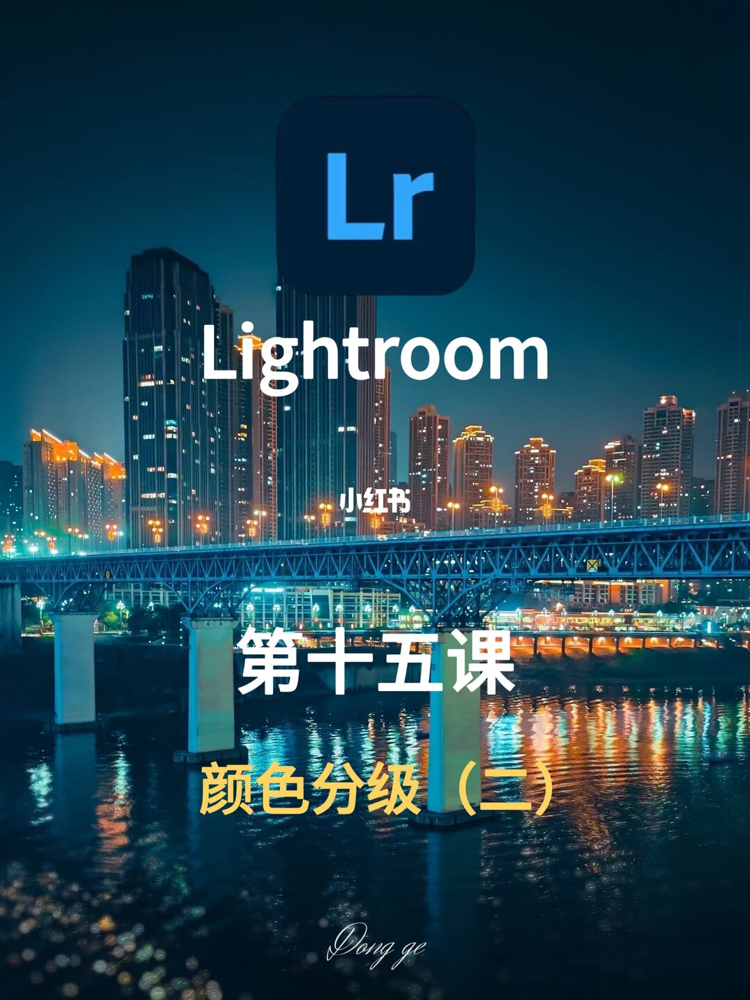
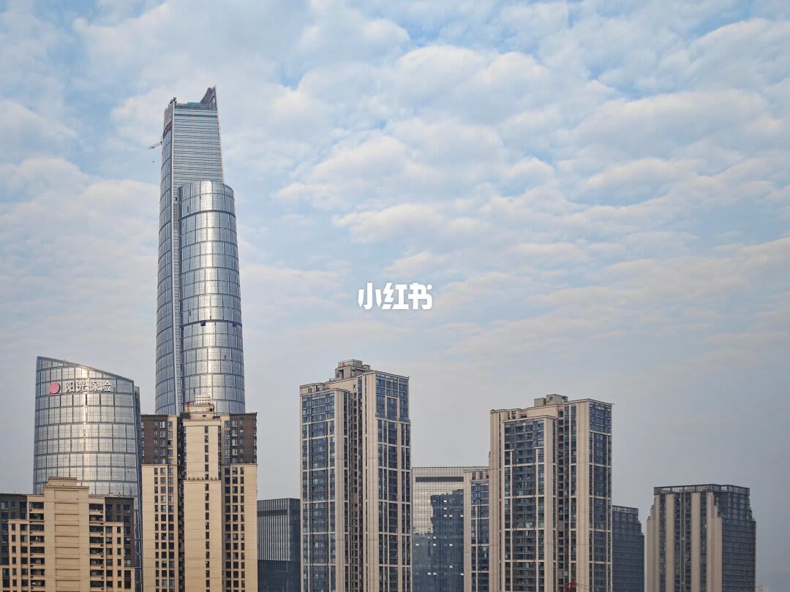
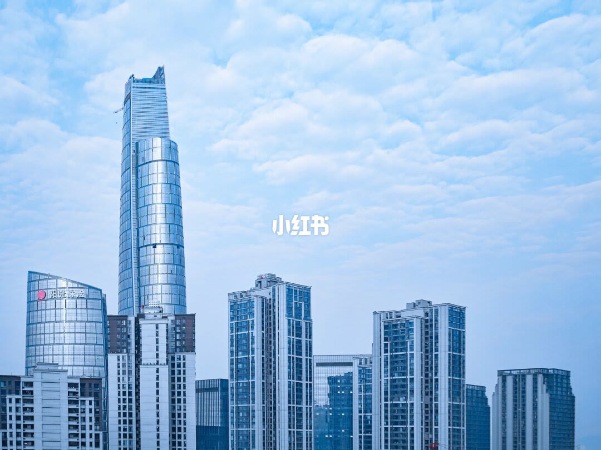
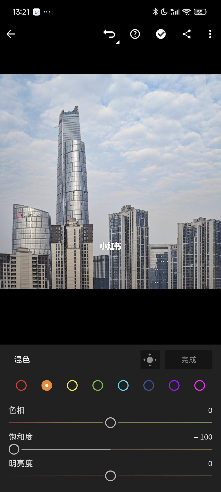
5/15–8/15第5/15页：🔥风格调色必学｜LR颜色分级实战教
[种草R]家人们，之前给大家讲了颜色混合和颜色分级工具的原理和使用方法。今天，我想通过详细解析从图2到图3的蜕变过程，为大家带来一场颜色混合与颜色分级工具协同运用的实战演示。 🎨前期分析 先看图2，颜色较丰富，黄的蓝的红的棕的啥都有。但咱想要图3那种高级感，主要保留蓝色，同时红色得留住，毕竟建筑上的logo可起到丰富画面的作用。 📝修图思路 去色处理（混合工具）----微调保留色饱和度和明亮度----染色处理（分级工具） [彩虹R]去色处理：打开LR，先把除了红色和蓝色之外的颜色都去掉。按照红橙黄绿青蓝紫洋红的顺序逐个操作。 [种草R]红色是咱要保留的，先放一边。 [种草R]橙色、黄色、绿色都不是我们想要的，直接把它们的饱和度拉到负100，瞬间消失！（图3-图5） [种草R]因为我们要保留蓝色（不动它），青色往蓝色方向调，紫色也往蓝色方向调。（图6、图7） [种草R]因为我们要保留红色，洋红色往红色方向调。（图8） [彩虹R]微调相近色：去色完成之后再返回去，把保留的红色、洋红色、青色和蓝色的饱和度和明亮度调整一下，使其更接近于我们所需要蓝色和红色。（图
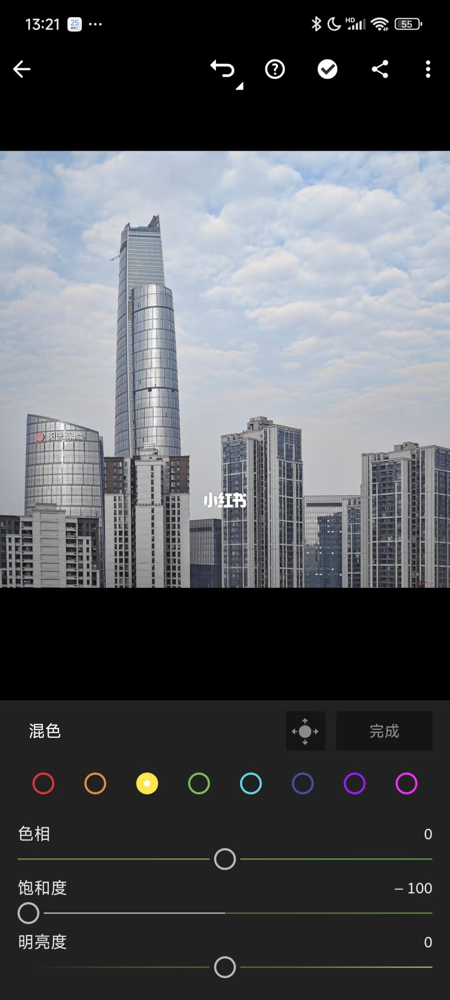
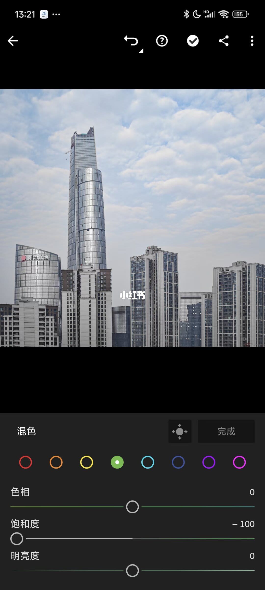
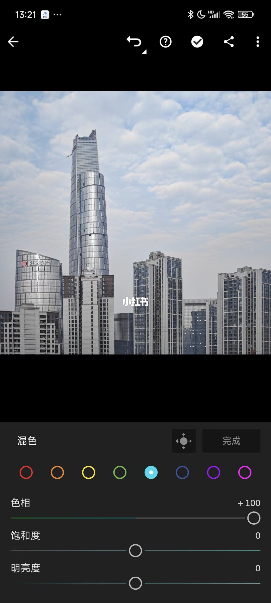
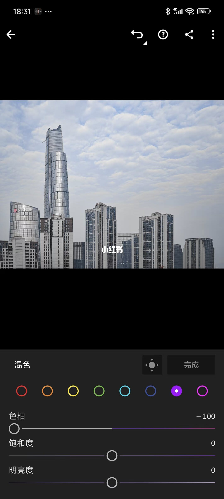
9/15–12/15第9/15页：🔥风格调色必学｜LR颜色分级实战教
[种草R]家人们，之前给大家讲了颜色混合和颜色分级工具的原理和使用方法。今天，我想通过详细解析从图2到图3的蜕变过程，为大家带来一场颜色混合与颜色分级工具协同运用的实战演示。 🎨前期分析 先看图2，颜色较丰富，黄的蓝的红的棕的啥都有。但咱想要图3那种高级感，主要保留蓝色，同时红色得留住，毕竟建筑上的logo可起到丰富画面的作用。 📝修图思路 去色处理（混合工具）----微调保留色饱和度和明亮度----染色处理（分级工具） [彩虹R]去色处理：打开LR，先把除了红色和蓝色之外的颜色都去掉。按照红橙黄绿青蓝紫洋红的顺序逐个操作。 [种草R]红色是咱要保留的，先放一边。 [种草R]橙色、黄色、绿色都不是我们想要的，直接把它们的饱和度拉到负100，瞬间消失！（图3-图5） [种草R]因为我们要保留蓝色（不动它），青色往蓝色方向调，紫色也往蓝色方向调。（图6、图7） [种草R]因为我们要保留红色，洋红色往红色方向调。（图8） [彩虹R]微调相近色：去色完成之后再返回去，把保留的红色、洋红色、青色和蓝色的饱和度和明亮度调整一下，使其更接近于我们所需要蓝色和红色。（图
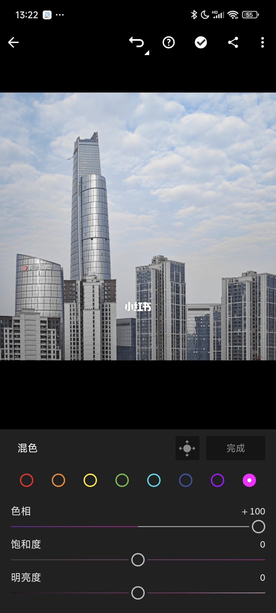
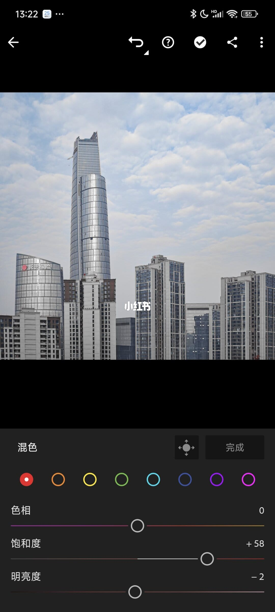
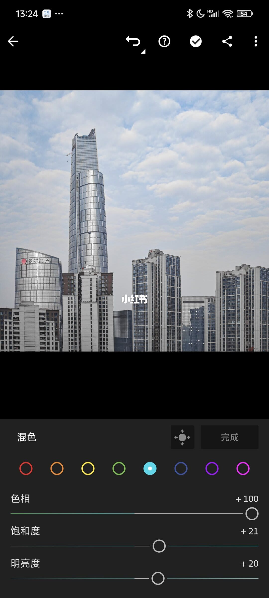
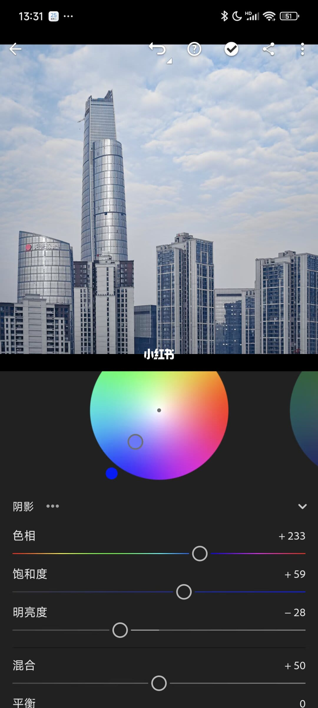
13/15–15/15第13/15页：🔥风格调色必学｜LR颜色分级实战
[种草R]家人们，之前给大家讲了颜色混合和颜色分级工具的原理和使用方法。今天，我想通过详细解析从图2到图3的蜕变过程，为大家带来一场颜色混合与颜色分级工具协同运用的实战演示。 🎨前期分析 先看图2，颜色较丰富，黄的蓝的红的棕的啥都有。但咱想要图3那种高级感，主要保留蓝色，同时红色得留住，毕竟建筑上的logo可起到丰富画面的作用。 📝修图思路 去色处理（混合工具）----微调保留色饱和度和明亮度----染色处理（分级工具） [彩虹R]去色处理：打开LR，先把除了红色和蓝色之外的颜色都去掉。按照红橙黄绿青蓝紫洋红的顺序逐个操作。 [种草R]红色是咱要保留的，先放一边。 [种草R]橙色、黄色、绿色都不是我们想要的，直接把它们的饱和度拉到负100，瞬间消失！（图3-图5） [种草R]因为我们要保留蓝色（不动它），青色往蓝色方向调，紫色也往蓝色方向调。（图6、图7） [种草R]因为我们要保留红色，洋红色往红色方向调。（图8） [彩虹R]微调相近色：去色完成之后再返回去，把保留的红色、洋红色、青色和蓝色的饱和度和明亮度调整一下，使其更接近于我们所需要蓝色和红色。（图
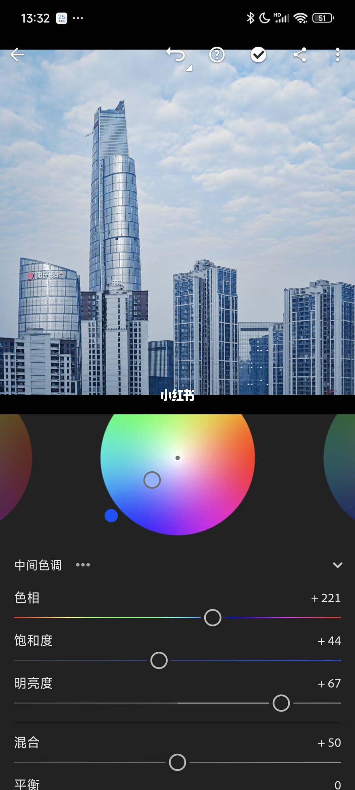
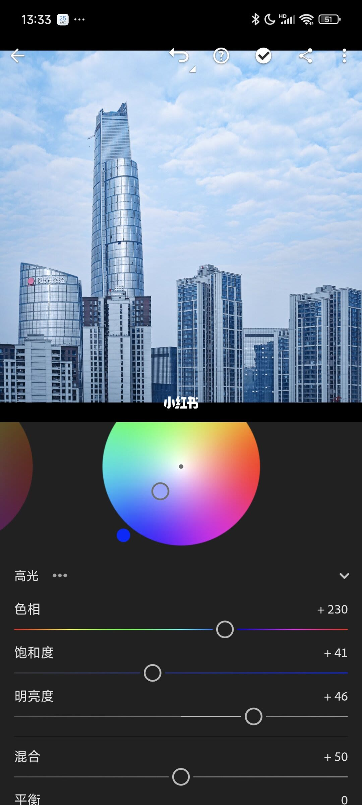
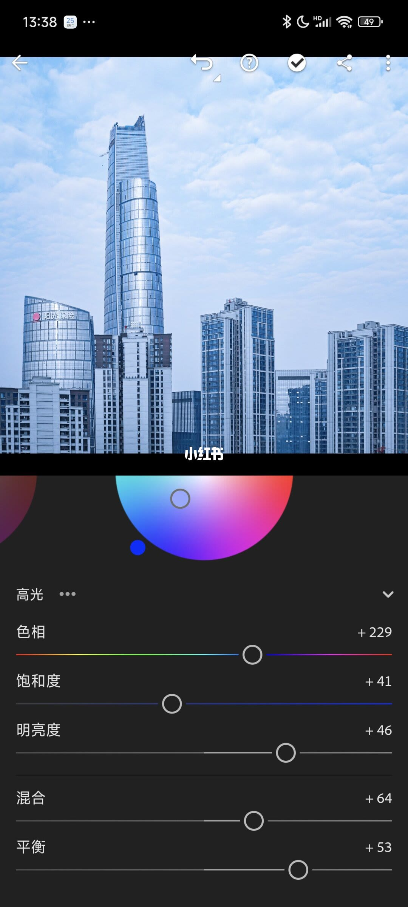
口述/画面要点（15段）
结合 Whisper medium 与画面大字整理；专有名词已校对。
封面/要点：[种草R]家人们，之前给大家讲了颜色混合和颜色分级工具的原理和使用方法。今天，我
第2/15页：🔥风格调色必学｜LR颜色分级实战教程
第3/15页：🔥风格调色必学｜LR颜色分级实战教程
第4/15页：🔥风格调色必学｜LR颜色分级实战教程
第5/15页：🔥风格调色必学｜LR颜色分级实战教程
第6/15页：🔥风格调色必学｜LR颜色分级实战教程
第7/15页：🔥风格调色必学｜LR颜色分级实战教程
第8/15页：🔥风格调色必学｜LR颜色分级实战教程
第9/15页：🔥风格调色必学｜LR颜色分级实战教程
第10/15页：🔥风格调色必学｜LR颜色分级实战教程
第11/15页：🔥风格调色必学｜LR颜色分级实战教程
第12/15页：🔥风格调色必学｜LR颜色分级实战教程
第13/15页：🔥风格调色必学｜LR颜色分级实战教程
第14/15页：🔥风格调色必学｜LR颜色分级实战教程
第15/15页：🔥风格调色必学｜LR颜色分级实战教程